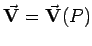
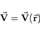

Inhalt Index DeskTop Bronstein

 Vektoranalysis und Feldtheorie Grundbegriffe der Feldtheorie Vektorfelder
Vektoranalysis und Feldtheorie Grundbegriffe der Feldtheorie Vektorfelder


Wird jedem Punkt P eines Raumteiles ein Vektor  zugeordnet, so schreibt man
zugeordnet, so schreibt man
und bezeichnet (13.12a) als Vektorfeld.
Beispiele für Vektorfelder sind das Geschwindigkeitsfeld der Teilchen einer strömenden Flüssigkeit sowie Kraft- und Feldstärkefelder.
Ein Vektorfeld  kann auch durch
|  | (13.12b) |
beschrieben werden, wobei  der Ortsvektor des Punktes M bei fest gewähltem Pol 0 ist. Ein ebenes Vektorfeld zeichnet sich dadurch aus, daß alle
der Ortsvektor des Punktes M bei fest gewähltem Pol 0 ist. Ein ebenes Vektorfeld zeichnet sich dadurch aus, daß alle  -Werte und alle
-Werte und alle  -Werte jeweils in einer Ebene liegen (s. auch Analytische Geometrie der Ebene).
-Werte jeweils in einer Ebene liegen (s. auch Analytische Geometrie der Ebene).